The data
This notebook aims at presenting the process of creating the end-to-end modelling pipeline with the use of PyPlatypus package.
As starting point, the data is crucial, let's proceed with gathering it hence. We will be working with the nuclei-related images of which the 2018 Data Science Bowl dataset is composed. These are PNG files organized in accordance with the following structure:
stage1_data
----|image_name
--------|images
------------|image.png
--------|masks
------------|mask1.png
------------|mask2.png
In the "images" folder you will find an image of shape (256, 256, 4) with the values varying from 0 to 1, while the masks are just (256, 256) matrices with the values coming from the discrete set: {0, 1}.
The preparation
After downloading the data, unpack it and move to any preferred destination. For this example we will be interested only in stage1_train and stage1_test subdirectories, thus other files could be put aside. Let's take a look at the exemplary image.
!pip install pyplatypus
from pathlib import Path
import os
cwd = Path.cwd()
while cwd.stem != "pyplatypus":
cwd = cwd.parent
os.chdir(cwd)
# 20% for validation
data_path = Path("examples/data/data_science_bowl/")
models_path = Path("examples/models/")
example = "0a7d30b252359a10fd298b638b90cb9ada3acced4e0c0e5a3692013f432ee4e9"
train_image = os.listdir(data_path/Path(f"stage1_train/{example}/images"), )
train_masks = os.listdir(data_path/Path(f"stage1_train/{example}/masks"))
from matplotlib import pyplot as plt
# Load the image along with on of the masks associated
example_image = plt.imread(data_path/Path(f"stage1_train/{example}/images/{train_image[0]}"))
example_mask1 = plt.imread(data_path/Path(f"stage1_train/{example}/masks/{train_masks[0]}"))
example_mask2 = plt.imread(data_path/Path(f"stage1_train/{example}/masks/{train_masks[2]}"))
plt.figure()
plt.imshow(example_image, alpha=0.6)
plt.imshow(example_mask1, alpha=0.2)
plt.imshow(example_mask2, alpha=0.2)
plt.title("Original image with the masks in yellow.")
Text(0.5, 1.0, 'Original image with the masks in yellow.')
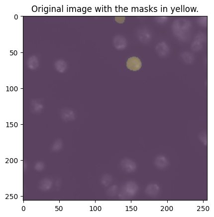
What you see as the yellow area is the "Segmentation mask" which is simply telling us which pixel belongs to which class. Assesing this membership is the goal that we are striving to achieve.
Splitting the data
For the modeling, beside train and test sets, we will need a validation set for it is common good practice to have one. Feel free to use the following script but beware, it will move a sample set of images from yout stage1_train folder to the stage1_validation.
from glob import glob
from random import sample
from shutil import move
def create_validation_set(data_path, p=0.2):
train_images = glob(str(data_path/Path("stage1_train/*")))
# Validation set size (as percentage)
p = 0.2
validation_images = sample(train_images, round(p*len(train_images)))
Path.mkdir(data_path/Path("stage1_validation"))
for img_path in validation_images:
trimmed_path = Path(img_path).stem
move(img_path, str(data_path/Path(f"stage1_validation/{trimmed_path}")))
Let's now inspect the input message that we are to send to PlatypusSolver in order to run it.
import yaml
import json
with open(r"examples/data_science_bowl_config.yaml") as stream:
config = yaml.safe_load(stream)
print(json.dumps(config, indent=4, sort_keys=True))
{
"augmentation": {
"Blur": {
"always_apply": false,
"blur_limit": 7,
"p": 0.5
},
"Flip": {
"always_apply": false,
"p": 0.5
},
"RandomRotate90": {
"always_apply": false,
"p": 0.5
},
"ToFloat": {
"always_apply": true,
"max_value": 255,
"p": 1.0
}
},
"object_detection": null,
"semantic_segmentation": {
"data": {
"colormap": [
[
0,
0,
0
],
[
255,
255,
255
]
],
"column_sep": ";",
"loss": "focal loss",
"metrics": [
"tversky coefficient",
"iou coefficient"
],
"mode": "nested_dirs",
"optimizer": "adam",
"shuffle": false,
"subdirs": [
"images",
"masks"
],
"test_path": "examples/data/data_science_bowl/stage1_test",
"train_path": "examples/data/data_science_bowl/stage1_train",
"validation_path": "examples/data/data_science_bowl/stage1_validation"
},
"models": [
{
"activation_layer": "relu",
"batch_normalization": true,
"batch_size": 32,
"blocks": 4,
"deep_supervision": false,
"dropout": 0.2,
"epochs": 200,
"filters": 16,
"grayscale": false,
"h_splits": 0,
"kernel_initializer": "he_normal",
"linknet": false,
"n_class": 2,
"name": "res_u_net",
"net_h": 256,
"net_w": 256,
"plus_plus": false,
"resunet": true,
"u_net_conv_block_width": 4,
"use_separable_conv2d": true,
"use_spatial_droput2d": true,
"use_up_sampling2d": false,
"w_splits": 0
},
{
"batch_normalization": true,
"batch_size": 8,
"blocks": 2,
"deep_supervision": false,
"dropout": 0.2,
"epochs": 200,
"filters": 16,
"grayscale": false,
"h_splits": 0,
"kernel_initializer": "he_normal",
"linknet": false,
"n_class": 2,
"name": "u_net_plus_plus",
"net_h": 256,
"net_w": 256,
"plus_plus": true,
"use_separable_conv2d": true,
"use_spatial_dropout2d": true,
"use_up_sampling2d": true,
"w_splits": 0
}
]
}
}
What might have struck you is that the config is organized so that it might potentially tell the Solver to train multiple models while using a complex augmentation pipeline and loss functions coming from the rather large set of ones available within the PyPlatypus framework.

The model
The models present in the PyPlatypus segmentation submodule are U-Net based.
U-Net was originally developed for biomedical data segmentation. As you can see in the picture above architecture is very similar to autoencoder and it looks like the letter U, hence the name. Model is composed of 2 parts, and each part has some number of convolutional blocks (3 in the image above). Number of blocks will be hyperparameter in our model.
To build a U-Net model in platypus use u_net function. You have to specify:
- Number of convolutional blocks,
- Input image height and width - it need not to be in the form 2^N, as we added the generalizng layer.
- Indicator determining if the input image will be loaded as grayscale or RGB.
- Number of classes - in our case we have only 2 (background and nuclei).
- Additional arguments for CNN such as: number of filters, dropout rate etc.
Hereafter the models' building process is rather straightforward.
from pyplatypus.solvers.platypus_cv_solver import PlatypusSolver
ps = PlatypusSolver(
config_yaml_path=Path("examples/data_science_bowl_config.yaml")
)
ps.train()
536 images detected!
Set 'steps_per_epoch' to: 17
134 images detected!
Set 'steps_per_epoch' to: 5
134 images detected!
Set 'steps_per_epoch' to: 5
2022-09-27 15:12:44.584388: I tensorflow/stream_executor/cuda/cuda_gpu_executor.cc:975] successful NUMA node read from SysFS had negative value (-1), but there must be at least one NUMA node, so returning NUMA node zero
2022-09-27 15:12:44.591384: I tensorflow/stream_executor/cuda/cuda_gpu_executor.cc:975] successful NUMA node read from SysFS had negative value (-1), but there must be at least one NUMA node, so returning NUMA node zero
2022-09-27 15:12:44.591617: I tensorflow/stream_executor/cuda/cuda_gpu_executor.cc:975] successful NUMA node read from SysFS had negative value (-1), but there must be at least one NUMA node, so returning NUMA node zero
2022-09-27 15:12:44.592313: I tensorflow/core/platform/cpu_feature_guard.cc:193] This TensorFlow binary is optimized with oneAPI Deep Neural Network Library (oneDNN) to use the following CPU instructions in performance-critical operations: AVX2 FMA
To enable them in other operations, rebuild TensorFlow with the appropriate compiler flags.
2022-09-27 15:12:44.593128: I tensorflow/stream_executor/cuda/cuda_gpu_executor.cc:975] successful NUMA node read from SysFS had negative value (-1), but there must be at least one NUMA node, so returning NUMA node zero
2022-09-27 15:12:44.593353: I tensorflow/stream_executor/cuda/cuda_gpu_executor.cc:975] successful NUMA node read from SysFS had negative value (-1), but there must be at least one NUMA node, so returning NUMA node zero
2022-09-27 15:12:44.593549: I tensorflow/stream_executor/cuda/cuda_gpu_executor.cc:975] successful NUMA node read from SysFS had negative value (-1), but there must be at least one NUMA node, so returning NUMA node zero
2022-09-27 15:12:45.135935: I tensorflow/stream_executor/cuda/cuda_gpu_executor.cc:975] successful NUMA node read from SysFS had negative value (-1), but there must be at least one NUMA node, so returning NUMA node zero
2022-09-27 15:12:45.136509: I tensorflow/stream_executor/cuda/cuda_gpu_executor.cc:975] successful NUMA node read from SysFS had negative value (-1), but there must be at least one NUMA node, so returning NUMA node zero
2022-09-27 15:12:45.136771: I tensorflow/stream_executor/cuda/cuda_gpu_executor.cc:975] successful NUMA node read from SysFS had negative value (-1), but there must be at least one NUMA node, so returning NUMA node zero
2022-09-27 15:12:45.136912: I tensorflow/core/common_runtime/gpu/gpu_device.cc:1532] Created device /job:localhost/replica:0/task:0/device:GPU:0 with 6885 MB memory: -> device: 0, name: NVIDIA GeForce GTX 1070, pci bus id: 0000:01:00.0, compute capability: 6.1
Epoch 1/200
2022-09-27 15:12:55.323063: I tensorflow/stream_executor/cuda/cuda_dnn.cc:384] Loaded cuDNN version 8101
17/17 [==============================] - 51s 2s/step - loss: 0.1535 - tversky_coefficient: 0.5162 - iou_coefficient: 0.3479 - categorical_crossentropy: 0.6897 - val_loss: 0.1246 - val_tversky_coefficient: 0.5171 - val_iou_coefficient: 0.3487 - val_categorical_crossentropy: 0.6616
Epoch 2/200
17/17 [==============================] - 40s 2s/step - loss: 0.1178 - tversky_coefficient: 0.5472 - iou_coefficient: 0.3768 - categorical_crossentropy: 0.6218 - val_loss: 0.1129 - val_tversky_coefficient: 0.5324 - val_iou_coefficient: 0.3628 - val_categorical_crossentropy: 0.6338
Epoch 3/200
17/17 [==============================] - 40s 2s/step - loss: 0.0911 - tversky_coefficient: 0.6040 - iou_coefficient: 0.4328 - categorical_crossentropy: 0.5304 - val_loss: 0.1121 - val_tversky_coefficient: 0.5344 - val_iou_coefficient: 0.3646 - val_categorical_crossentropy: 0.6288
Epoch 4/200
17/17 [==============================] - 41s 2s/step - loss: 0.0743 - tversky_coefficient: 0.6378 - iou_coefficient: 0.4684 - categorical_crossentropy: 0.4754 - val_loss: 0.1227 - val_tversky_coefficient: 0.5232 - val_iou_coefficient: 0.3544 - val_categorical_crossentropy: 0.6479
Epoch 5/200
17/17 [==============================] - 41s 2s/step - loss: 0.0569 - tversky_coefficient: 0.6791 - iou_coefficient: 0.5143 - categorical_crossentropy: 0.4109 - val_loss: 0.0845 - val_tversky_coefficient: 0.6067 - val_iou_coefficient: 0.4355 - val_categorical_crossentropy: 0.5192
Epoch 6/200
17/17 [==============================] - 41s 2s/step - loss: 0.0462 - tversky_coefficient: 0.7052 - iou_coefficient: 0.5448 - categorical_crossentropy: 0.3695 - val_loss: 0.1364 - val_tversky_coefficient: 0.5257 - val_iou_coefficient: 0.3567 - val_categorical_crossentropy: 0.6521
Epoch 7/200
17/17 [==============================] - 37s 2s/step - loss: 0.0423 - tversky_coefficient: 0.7207 - iou_coefficient: 0.5635 - categorical_crossentropy: 0.3479 - val_loss: 0.2043 - val_tversky_coefficient: 0.5007 - val_iou_coefficient: 0.3343 - val_categorical_crossentropy: 0.7327
Epoch 8/200
17/17 [==============================] - 44s 3s/step - loss: 0.0396 - tversky_coefficient: 0.7342 - iou_coefficient: 0.5801 - categorical_crossentropy: 0.3301 - val_loss: 0.1240 - val_tversky_coefficient: 0.5489 - val_iou_coefficient: 0.3784 - val_categorical_crossentropy: 0.6145
Epoch 9/200
17/17 [==============================] - 44s 3s/step - loss: 0.0341 - tversky_coefficient: 0.7489 - iou_coefficient: 0.5987 - categorical_crossentropy: 0.3077 - val_loss: 0.0944 - val_tversky_coefficient: 0.6854 - val_iou_coefficient: 0.5217 - val_categorical_crossentropy: 0.4352
Epoch 10/200
17/17 [==============================] - 43s 2s/step - loss: 0.0319 - tversky_coefficient: 0.7618 - iou_coefficient: 0.6154 - categorical_crossentropy: 0.2908 - val_loss: 0.1010 - val_tversky_coefficient: 0.6940 - val_iou_coefficient: 0.5317 - val_categorical_crossentropy: 0.4308
Epoch 11/200
17/17 [==============================] - 45s 3s/step - loss: 0.0294 - tversky_coefficient: 0.7699 - iou_coefficient: 0.6259 - categorical_crossentropy: 0.2793 - val_loss: 0.1126 - val_tversky_coefficient: 0.7242 - val_iou_coefficient: 0.5682 - val_categorical_crossentropy: 0.4067
Epoch 12/200
17/17 [==============================] - 42s 2s/step - loss: 0.0286 - tversky_coefficient: 0.7796 - iou_coefficient: 0.6390 - categorical_crossentropy: 0.2671 - val_loss: 0.1213 - val_tversky_coefficient: 0.7351 - val_iou_coefficient: 0.5818 - val_categorical_crossentropy: 0.4014
Epoch 13/200
17/17 [==============================] - 46s 3s/step - loss: 0.0287 - tversky_coefficient: 0.7883 - iou_coefficient: 0.6506 - categorical_crossentropy: 0.2577 - val_loss: 0.1319 - val_tversky_coefficient: 0.7471 - val_iou_coefficient: 0.5970 - val_categorical_crossentropy: 0.3971
Epoch 14/200
17/17 [==============================] - 47s 3s/step - loss: 0.0274 - tversky_coefficient: 0.7910 - iou_coefficient: 0.6543 - categorical_crossentropy: 0.2536 - val_loss: 0.1255 - val_tversky_coefficient: 0.7413 - val_iou_coefficient: 0.5895 - val_categorical_crossentropy: 0.3981
Epoch 15/200
17/17 [==============================] - 42s 3s/step - loss: 0.0268 - tversky_coefficient: 0.7943 - iou_coefficient: 0.6588 - categorical_crossentropy: 0.2488 - val_loss: 0.1395 - val_tversky_coefficient: 0.7590 - val_iou_coefficient: 0.6123 - val_categorical_crossentropy: 0.3904
Epoch 16/200
17/17 [==============================] - 45s 3s/step - loss: 0.0251 - tversky_coefficient: 0.7994 - iou_coefficient: 0.6659 - categorical_crossentropy: 0.2416 - val_loss: 0.1629 - val_tversky_coefficient: 0.7851 - val_iou_coefficient: 0.6473 - val_categorical_crossentropy: 0.3833
Epoch 17/200
17/17 [==============================] - 43s 2s/step - loss: 0.0263 - tversky_coefficient: 0.8058 - iou_coefficient: 0.6748 - categorical_crossentropy: 0.2359 - val_loss: 0.1556 - val_tversky_coefficient: 0.7773 - val_iou_coefficient: 0.6367 - val_categorical_crossentropy: 0.3849
Epoch 18/200
17/17 [==============================] - 44s 3s/step - loss: 0.0240 - tversky_coefficient: 0.8127 - iou_coefficient: 0.6846 - categorical_crossentropy: 0.2256 - val_loss: 0.1711 - val_tversky_coefficient: 0.7900 - val_iou_coefficient: 0.6539 - val_categorical_crossentropy: 0.3851
Epoch 19/200
17/17 [==============================] - 45s 3s/step - loss: 0.0248 - tversky_coefficient: 0.8150 - iou_coefficient: 0.6879 - categorical_crossentropy: 0.2241 - val_loss: 0.1581 - val_tversky_coefficient: 0.7817 - val_iou_coefficient: 0.6425 - val_categorical_crossentropy: 0.3819
Epoch 20/200
17/17 [==============================] - 44s 3s/step - loss: 0.0228 - tversky_coefficient: 0.8175 - iou_coefficient: 0.6914 - categorical_crossentropy: 0.2193 - val_loss: 0.1701 - val_tversky_coefficient: 0.7923 - val_iou_coefficient: 0.6571 - val_categorical_crossentropy: 0.3814
Epoch 21/200
17/17 [==============================] - 42s 2s/step - loss: 0.0223 - tversky_coefficient: 0.8210 - iou_coefficient: 0.6963 - categorical_crossentropy: 0.2147 - val_loss: 0.1528 - val_tversky_coefficient: 0.7843 - val_iou_coefficient: 0.6460 - val_categorical_crossentropy: 0.3743
Epoch 22/200
17/17 [==============================] - 42s 2s/step - loss: 0.0235 - tversky_coefficient: 0.8133 - iou_coefficient: 0.6854 - categorical_crossentropy: 0.2245 - val_loss: 0.1652 - val_tversky_coefficient: 0.7990 - val_iou_coefficient: 0.6665 - val_categorical_crossentropy: 0.3710
Epoch 23/200
17/17 [==============================] - 42s 2s/step - loss: 0.0221 - tversky_coefficient: 0.8245 - iou_coefficient: 0.7014 - categorical_crossentropy: 0.2106 - val_loss: 0.1656 - val_tversky_coefficient: 0.7997 - val_iou_coefficient: 0.6674 - val_categorical_crossentropy: 0.3704
Epoch 24/200
17/17 [==============================] - 41s 2s/step - loss: 0.0211 - tversky_coefficient: 0.8252 - iou_coefficient: 0.7025 - categorical_crossentropy: 0.2087 - val_loss: 0.1620 - val_tversky_coefficient: 0.8048 - val_iou_coefficient: 0.6745 - val_categorical_crossentropy: 0.3617
Epoch 25/200
17/17 [==============================] - 42s 2s/step - loss: 0.0215 - tversky_coefficient: 0.8283 - iou_coefficient: 0.7070 - categorical_crossentropy: 0.2059 - val_loss: 0.1573 - val_tversky_coefficient: 0.8011 - val_iou_coefficient: 0.6694 - val_categorical_crossentropy: 0.3619
Epoch 26/200
17/17 [==============================] - 46s 3s/step - loss: 0.0210 - tversky_coefficient: 0.8283 - iou_coefficient: 0.7069 - categorical_crossentropy: 0.2053 - val_loss: 0.1444 - val_tversky_coefficient: 0.7979 - val_iou_coefficient: 0.6648 - val_categorical_crossentropy: 0.3532
Epoch 27/200
17/17 [==============================] - 42s 2s/step - loss: 0.0206 - tversky_coefficient: 0.8258 - iou_coefficient: 0.7033 - categorical_crossentropy: 0.2078 - val_loss: 0.1544 - val_tversky_coefficient: 0.8088 - val_iou_coefficient: 0.6801 - val_categorical_crossentropy: 0.3506
Epoch 28/200
17/17 [==============================] - 43s 2s/step - loss: 0.0204 - tversky_coefficient: 0.8356 - iou_coefficient: 0.7176 - categorical_crossentropy: 0.1966 - val_loss: 0.1569 - val_tversky_coefficient: 0.8135 - val_iou_coefficient: 0.6867 - val_categorical_crossentropy: 0.3474
Epoch 29/200
17/17 [==============================] - 42s 2s/step - loss: 0.0194 - tversky_coefficient: 0.8349 - iou_coefficient: 0.7167 - categorical_crossentropy: 0.1964 - val_loss: 0.1329 - val_tversky_coefficient: 0.8113 - val_iou_coefficient: 0.6834 - val_categorical_crossentropy: 0.3275
Epoch 30/200
17/17 [==============================] - 40s 2s/step - loss: 0.0194 - tversky_coefficient: 0.8367 - iou_coefficient: 0.7194 - categorical_crossentropy: 0.1943 - val_loss: 0.1490 - val_tversky_coefficient: 0.8224 - val_iou_coefficient: 0.6994 - val_categorical_crossentropy: 0.3315
Epoch 31/200
17/17 [==============================] - 44s 3s/step - loss: 0.0190 - tversky_coefficient: 0.8409 - iou_coefficient: 0.7256 - categorical_crossentropy: 0.1894 - val_loss: 0.1325 - val_tversky_coefficient: 0.8222 - val_iou_coefficient: 0.6990 - val_categorical_crossentropy: 0.3163
Epoch 32/200
17/17 [==============================] - 41s 2s/step - loss: 0.0187 - tversky_coefficient: 0.8482 - iou_coefficient: 0.7364 - categorical_crossentropy: 0.1810 - val_loss: 0.1354 - val_tversky_coefficient: 0.8293 - val_iou_coefficient: 0.7095 - val_categorical_crossentropy: 0.3122
Epoch 33/200
17/17 [==============================] - 43s 2s/step - loss: 0.0186 - tversky_coefficient: 0.8439 - iou_coefficient: 0.7301 - categorical_crossentropy: 0.1858 - val_loss: 0.0932 - val_tversky_coefficient: 0.8319 - val_iou_coefficient: 0.7132 - val_categorical_crossentropy: 0.2721
Epoch 34/200
17/17 [==============================] - 42s 2s/step - loss: 0.0184 - tversky_coefficient: 0.8479 - iou_coefficient: 0.7359 - categorical_crossentropy: 0.1810 - val_loss: 0.0940 - val_tversky_coefficient: 0.8326 - val_iou_coefficient: 0.7142 - val_categorical_crossentropy: 0.2722
Epoch 35/200
17/17 [==============================] - 43s 2s/step - loss: 0.0183 - tversky_coefficient: 0.8492 - iou_coefficient: 0.7379 - categorical_crossentropy: 0.1796 - val_loss: 0.0715 - val_tversky_coefficient: 0.8449 - val_iou_coefficient: 0.7325 - val_categorical_crossentropy: 0.2387
Epoch 36/200
17/17 [==============================] - 39s 2s/step - loss: 0.0187 - tversky_coefficient: 0.8519 - iou_coefficient: 0.7421 - categorical_crossentropy: 0.1769 - val_loss: 0.0305 - val_tversky_coefficient: 0.8503 - val_iou_coefficient: 0.7401 - val_categorical_crossentropy: 0.1949
Epoch 37/200
17/17 [==============================] - 45s 3s/step - loss: 0.0183 - tversky_coefficient: 0.8513 - iou_coefficient: 0.7411 - categorical_crossentropy: 0.1772 - val_loss: 0.0456 - val_tversky_coefficient: 0.8548 - val_iou_coefficient: 0.7474 - val_categorical_crossentropy: 0.2055
Epoch 38/200
17/17 [==============================] - 42s 2s/step - loss: 0.0180 - tversky_coefficient: 0.8538 - iou_coefficient: 0.7450 - categorical_crossentropy: 0.1744 - val_loss: 0.0247 - val_tversky_coefficient: 0.8629 - val_iou_coefficient: 0.7596 - val_categorical_crossentropy: 0.1763
Epoch 39/200
17/17 [==============================] - 41s 2s/step - loss: 0.0179 - tversky_coefficient: 0.8524 - iou_coefficient: 0.7428 - categorical_crossentropy: 0.1758 - val_loss: 0.0224 - val_tversky_coefficient: 0.8622 - val_iou_coefficient: 0.7584 - val_categorical_crossentropy: 0.1745
Epoch 40/200
17/17 [==============================] - 43s 2s/step - loss: 0.0177 - tversky_coefficient: 0.8563 - iou_coefficient: 0.7488 - categorical_crossentropy: 0.1713 - val_loss: 0.0189 - val_tversky_coefficient: 0.8669 - val_iou_coefficient: 0.7656 - val_categorical_crossentropy: 0.1649
Epoch 41/200
17/17 [==============================] - 47s 3s/step - loss: 0.0174 - tversky_coefficient: 0.8565 - iou_coefficient: 0.7491 - categorical_crossentropy: 0.1707 - val_loss: 0.0183 - val_tversky_coefficient: 0.8615 - val_iou_coefficient: 0.7572 - val_categorical_crossentropy: 0.1705
Epoch 42/200
17/17 [==============================] - 42s 2s/step - loss: 0.0170 - tversky_coefficient: 0.8602 - iou_coefficient: 0.7547 - categorical_crossentropy: 0.1663 - val_loss: 0.0173 - val_tversky_coefficient: 0.8718 - val_iou_coefficient: 0.7733 - val_categorical_crossentropy: 0.1581
Epoch 43/200
17/17 [==============================] - 43s 2s/step - loss: 0.0181 - tversky_coefficient: 0.8589 - iou_coefficient: 0.7527 - categorical_crossentropy: 0.1688 - val_loss: 0.0182 - val_tversky_coefficient: 0.8732 - val_iou_coefficient: 0.7756 - val_categorical_crossentropy: 0.1590
Epoch 44/200
17/17 [==============================] - 42s 3s/step - loss: 0.0180 - tversky_coefficient: 0.8595 - iou_coefficient: 0.7536 - categorical_crossentropy: 0.1682 - val_loss: 0.0181 - val_tversky_coefficient: 0.8702 - val_iou_coefficient: 0.7708 - val_categorical_crossentropy: 0.1622
Epoch 45/200
17/17 [==============================] - 41s 2s/step - loss: 0.0175 - tversky_coefficient: 0.8593 - iou_coefficient: 0.7533 - categorical_crossentropy: 0.1679 - val_loss: 0.0187 - val_tversky_coefficient: 0.8731 - val_iou_coefficient: 0.7752 - val_categorical_crossentropy: 0.1571
Epoch 46/200
17/17 [==============================] - 44s 3s/step - loss: 0.0172 - tversky_coefficient: 0.8607 - iou_coefficient: 0.7554 - categorical_crossentropy: 0.1662 - val_loss: 0.0176 - val_tversky_coefficient: 0.8764 - val_iou_coefficient: 0.7805 - val_categorical_crossentropy: 0.1532
Epoch 47/200
17/17 [==============================] - 44s 3s/step - loss: 0.0174 - tversky_coefficient: 0.8647 - iou_coefficient: 0.7618 - categorical_crossentropy: 0.1618 - val_loss: 0.0176 - val_tversky_coefficient: 0.8820 - val_iou_coefficient: 0.7893 - val_categorical_crossentropy: 0.1473
Epoch 48/200
17/17 [==============================] - 44s 3s/step - loss: 0.0176 - tversky_coefficient: 0.8625 - iou_coefficient: 0.7583 - categorical_crossentropy: 0.1645 - val_loss: 0.0163 - val_tversky_coefficient: 0.8916 - val_iou_coefficient: 0.8050 - val_categorical_crossentropy: 0.1362
Epoch 49/200
17/17 [==============================] - 41s 2s/step - loss: 0.0174 - tversky_coefficient: 0.8630 - iou_coefficient: 0.7590 - categorical_crossentropy: 0.1638 - val_loss: 0.0167 - val_tversky_coefficient: 0.8869 - val_iou_coefficient: 0.7974 - val_categorical_crossentropy: 0.1414
Epoch 50/200
17/17 [==============================] - 42s 2s/step - loss: 0.0168 - tversky_coefficient: 0.8673 - iou_coefficient: 0.7657 - categorical_crossentropy: 0.1586 - val_loss: 0.0174 - val_tversky_coefficient: 0.8840 - val_iou_coefficient: 0.7925 - val_categorical_crossentropy: 0.1446
Epoch 51/200
17/17 [==============================] - 42s 2s/step - loss: 0.0171 - tversky_coefficient: 0.8667 - iou_coefficient: 0.7648 - categorical_crossentropy: 0.1594 - val_loss: 0.0163 - val_tversky_coefficient: 0.8857 - val_iou_coefficient: 0.7953 - val_categorical_crossentropy: 0.1417
Epoch 52/200
17/17 [==============================] - 40s 2s/step - loss: 0.0170 - tversky_coefficient: 0.8664 - iou_coefficient: 0.7644 - categorical_crossentropy: 0.1597 - val_loss: 0.0174 - val_tversky_coefficient: 0.8802 - val_iou_coefficient: 0.7863 - val_categorical_crossentropy: 0.1475
Epoch 53/200
17/17 [==============================] - 38s 2s/step - loss: 0.0165 - tversky_coefficient: 0.8657 - iou_coefficient: 0.7633 - categorical_crossentropy: 0.1600 - val_loss: 0.0171 - val_tversky_coefficient: 0.8784 - val_iou_coefficient: 0.7835 - val_categorical_crossentropy: 0.1505
Epoch 54/200
17/17 [==============================] - 37s 2s/step - loss: 0.0168 - tversky_coefficient: 0.8652 - iou_coefficient: 0.7625 - categorical_crossentropy: 0.1607 - val_loss: 0.0165 - val_tversky_coefficient: 0.8846 - val_iou_coefficient: 0.7935 - val_categorical_crossentropy: 0.1431
Epoch 55/200
17/17 [==============================] - 38s 2s/step - loss: 0.0167 - tversky_coefficient: 0.8692 - iou_coefficient: 0.7686 - categorical_crossentropy: 0.1564 - val_loss: 0.0157 - val_tversky_coefficient: 0.8799 - val_iou_coefficient: 0.7860 - val_categorical_crossentropy: 0.1477
Epoch 56/200
17/17 [==============================] - 37s 2s/step - loss: 0.0163 - tversky_coefficient: 0.8680 - iou_coefficient: 0.7668 - categorical_crossentropy: 0.1572 - val_loss: 0.0164 - val_tversky_coefficient: 0.8815 - val_iou_coefficient: 0.7887 - val_categorical_crossentropy: 0.1471
Epoch 57/200
17/17 [==============================] - 38s 2s/step - loss: 0.0164 - tversky_coefficient: 0.8706 - iou_coefficient: 0.7709 - categorical_crossentropy: 0.1545 - val_loss: 0.0162 - val_tversky_coefficient: 0.8788 - val_iou_coefficient: 0.7845 - val_categorical_crossentropy: 0.1500
Epoch 58/200
17/17 [==============================] - 39s 2s/step - loss: 0.0166 - tversky_coefficient: 0.8699 - iou_coefficient: 0.7698 - categorical_crossentropy: 0.1556 - val_loss: 0.0155 - val_tversky_coefficient: 0.8816 - val_iou_coefficient: 0.7887 - val_categorical_crossentropy: 0.1450
Epoch 59/200
17/17 [==============================] - 37s 2s/step - loss: 0.0163 - tversky_coefficient: 0.8718 - iou_coefficient: 0.7727 - categorical_crossentropy: 0.1531 - val_loss: 0.0152 - val_tversky_coefficient: 0.8896 - val_iou_coefficient: 0.8016 - val_categorical_crossentropy: 0.1366
Epoch 60/200
17/17 [==============================] - 38s 2s/step - loss: 0.0163 - tversky_coefficient: 0.8731 - iou_coefficient: 0.7748 - categorical_crossentropy: 0.1517 - val_loss: 0.0152 - val_tversky_coefficient: 0.8852 - val_iou_coefficient: 0.7944 - val_categorical_crossentropy: 0.1410
Epoch 61/200
17/17 [==============================] - 40s 2s/step - loss: 0.0160 - tversky_coefficient: 0.8732 - iou_coefficient: 0.7750 - categorical_crossentropy: 0.1514 - val_loss: 0.0158 - val_tversky_coefficient: 0.8881 - val_iou_coefficient: 0.7991 - val_categorical_crossentropy: 0.1386
Epoch 62/200
17/17 [==============================] - 36s 2s/step - loss: 0.0161 - tversky_coefficient: 0.8745 - iou_coefficient: 0.7771 - categorical_crossentropy: 0.1501 - val_loss: 0.0154 - val_tversky_coefficient: 0.8916 - val_iou_coefficient: 0.8051 - val_categorical_crossentropy: 0.1370
Epoch 63/200
17/17 [==============================] - 36s 2s/step - loss: 0.0168 - tversky_coefficient: 0.8731 - iou_coefficient: 0.7749 - categorical_crossentropy: 0.1523 - val_loss: 0.0154 - val_tversky_coefficient: 0.8980 - val_iou_coefficient: 0.8153 - val_categorical_crossentropy: 0.1269
Epoch 64/200
17/17 [==============================] - 36s 2s/step - loss: 0.0161 - tversky_coefficient: 0.8770 - iou_coefficient: 0.7810 - categorical_crossentropy: 0.1474 - val_loss: 0.0160 - val_tversky_coefficient: 0.8883 - val_iou_coefficient: 0.7996 - val_categorical_crossentropy: 0.1392
Epoch 65/200
17/17 [==============================] - 37s 2s/step - loss: 0.0159 - tversky_coefficient: 0.8741 - iou_coefficient: 0.7764 - categorical_crossentropy: 0.1504 - val_loss: 0.0159 - val_tversky_coefficient: 0.8917 - val_iou_coefficient: 0.8052 - val_categorical_crossentropy: 0.1359
Epoch 66/200
17/17 [==============================] - 37s 2s/step - loss: 0.0160 - tversky_coefficient: 0.8755 - iou_coefficient: 0.7787 - categorical_crossentropy: 0.1489 - val_loss: 0.0153 - val_tversky_coefficient: 0.8949 - val_iou_coefficient: 0.8102 - val_categorical_crossentropy: 0.1309
Epoch 67/200
17/17 [==============================] - 37s 2s/step - loss: 0.0160 - tversky_coefficient: 0.8753 - iou_coefficient: 0.7784 - categorical_crossentropy: 0.1489 - val_loss: 0.0150 - val_tversky_coefficient: 0.8915 - val_iou_coefficient: 0.8046 - val_categorical_crossentropy: 0.1336
Epoch 68/200
17/17 [==============================] - 38s 2s/step - loss: 0.0156 - tversky_coefficient: 0.8760 - iou_coefficient: 0.7794 - categorical_crossentropy: 0.1481 - val_loss: 0.0153 - val_tversky_coefficient: 0.8910 - val_iou_coefficient: 0.8037 - val_categorical_crossentropy: 0.1343
Epoch 69/200
17/17 [==============================] - 40s 2s/step - loss: 0.0159 - tversky_coefficient: 0.8781 - iou_coefficient: 0.7827 - categorical_crossentropy: 0.1461 - val_loss: 0.0149 - val_tversky_coefficient: 0.8873 - val_iou_coefficient: 0.7979 - val_categorical_crossentropy: 0.1393
Epoch 70/200
17/17 [==============================] - 40s 2s/step - loss: 0.0158 - tversky_coefficient: 0.8771 - iou_coefficient: 0.7812 - categorical_crossentropy: 0.1469 - val_loss: 0.0148 - val_tversky_coefficient: 0.8909 - val_iou_coefficient: 0.8036 - val_categorical_crossentropy: 0.1344
Epoch 71/200
17/17 [==============================] - 37s 2s/step - loss: 0.0157 - tversky_coefficient: 0.8784 - iou_coefficient: 0.7832 - categorical_crossentropy: 0.1455 - val_loss: 0.0150 - val_tversky_coefficient: 0.8890 - val_iou_coefficient: 0.8007 - val_categorical_crossentropy: 0.1377
Epoch 72/200
17/17 [==============================] - 38s 2s/step - loss: 0.0154 - tversky_coefficient: 0.8774 - iou_coefficient: 0.7817 - categorical_crossentropy: 0.1463 - val_loss: 0.0157 - val_tversky_coefficient: 0.8820 - val_iou_coefficient: 0.7892 - val_categorical_crossentropy: 0.1434
Epoch 73/200
17/17 [==============================] - 38s 2s/step - loss: 0.0161 - tversky_coefficient: 0.8793 - iou_coefficient: 0.7846 - categorical_crossentropy: 0.1450 - val_loss: 0.0150 - val_tversky_coefficient: 0.8848 - val_iou_coefficient: 0.7938 - val_categorical_crossentropy: 0.1414
Epoch 74/200
17/17 [==============================] - 37s 2s/step - loss: 0.0164 - tversky_coefficient: 0.8769 - iou_coefficient: 0.7808 - categorical_crossentropy: 0.1479 - val_loss: 0.0157 - val_tversky_coefficient: 0.8874 - val_iou_coefficient: 0.7978 - val_categorical_crossentropy: 0.1385
Epoch 75/200
17/17 [==============================] - 37s 2s/step - loss: 0.0154 - tversky_coefficient: 0.8782 - iou_coefficient: 0.7829 - categorical_crossentropy: 0.1455 - val_loss: 0.0156 - val_tversky_coefficient: 0.9003 - val_iou_coefficient: 0.8191 - val_categorical_crossentropy: 0.1255
Epoch 76/200
17/17 [==============================] - 37s 2s/step - loss: 0.0154 - tversky_coefficient: 0.8799 - iou_coefficient: 0.7856 - categorical_crossentropy: 0.1436 - val_loss: 0.0151 - val_tversky_coefficient: 0.8995 - val_iou_coefficient: 0.8178 - val_categorical_crossentropy: 0.1250
Epoch 77/200
17/17 [==============================] - 36s 2s/step - loss: 0.0155 - tversky_coefficient: 0.8796 - iou_coefficient: 0.7852 - categorical_crossentropy: 0.1441 - val_loss: 0.0146 - val_tversky_coefficient: 0.8959 - val_iou_coefficient: 0.8118 - val_categorical_crossentropy: 0.1291
Epoch 78/200
17/17 [==============================] - 36s 2s/step - loss: 0.0152 - tversky_coefficient: 0.8811 - iou_coefficient: 0.7875 - categorical_crossentropy: 0.1421 - val_loss: 0.0152 - val_tversky_coefficient: 0.8972 - val_iou_coefficient: 0.8140 - val_categorical_crossentropy: 0.1281
Epoch 79/200
17/17 [==============================] - 37s 2s/step - loss: 0.0150 - tversky_coefficient: 0.8815 - iou_coefficient: 0.7882 - categorical_crossentropy: 0.1415 - val_loss: 0.0150 - val_tversky_coefficient: 0.9059 - val_iou_coefficient: 0.8286 - val_categorical_crossentropy: 0.1189
Epoch 80/200
17/17 [==============================] - 37s 2s/step - loss: 0.0148 - tversky_coefficient: 0.8844 - iou_coefficient: 0.7928 - categorical_crossentropy: 0.1381 - val_loss: 0.0143 - val_tversky_coefficient: 0.9043 - val_iou_coefficient: 0.8259 - val_categorical_crossentropy: 0.1206
Epoch 81/200
17/17 [==============================] - 36s 2s/step - loss: 0.0150 - tversky_coefficient: 0.8836 - iou_coefficient: 0.7915 - categorical_crossentropy: 0.1391 - val_loss: 0.0146 - val_tversky_coefficient: 0.8979 - val_iou_coefficient: 0.8151 - val_categorical_crossentropy: 0.1271
Epoch 82/200
17/17 [==============================] - 37s 2s/step - loss: 0.0151 - tversky_coefficient: 0.8820 - iou_coefficient: 0.7890 - categorical_crossentropy: 0.1410 - val_loss: 0.0145 - val_tversky_coefficient: 0.9015 - val_iou_coefficient: 0.8210 - val_categorical_crossentropy: 0.1232
Epoch 83/200
17/17 [==============================] - 39s 2s/step - loss: 0.0152 - tversky_coefficient: 0.8816 - iou_coefficient: 0.7883 - categorical_crossentropy: 0.1416 - val_loss: 0.0150 - val_tversky_coefficient: 0.8957 - val_iou_coefficient: 0.8116 - val_categorical_crossentropy: 0.1310
Epoch 84/200
17/17 [==============================] - 36s 2s/step - loss: 0.0153 - tversky_coefficient: 0.8825 - iou_coefficient: 0.7898 - categorical_crossentropy: 0.1407 - val_loss: 0.0146 - val_tversky_coefficient: 0.8972 - val_iou_coefficient: 0.8140 - val_categorical_crossentropy: 0.1276
Epoch 85/200
17/17 [==============================] - 35s 2s/step - loss: 0.0148 - tversky_coefficient: 0.8833 - iou_coefficient: 0.7910 - categorical_crossentropy: 0.1394 - val_loss: 0.0149 - val_tversky_coefficient: 0.8893 - val_iou_coefficient: 0.8010 - val_categorical_crossentropy: 0.1349
Epoch 86/200
17/17 [==============================] - 38s 2s/step - loss: 0.0151 - tversky_coefficient: 0.8866 - iou_coefficient: 0.7964 - categorical_crossentropy: 0.1361 - val_loss: 0.0152 - val_tversky_coefficient: 0.8903 - val_iou_coefficient: 0.8027 - val_categorical_crossentropy: 0.1360
Epoch 87/200
17/17 [==============================] - 36s 2s/step - loss: 0.0163 - tversky_coefficient: 0.8807 - iou_coefficient: 0.7869 - categorical_crossentropy: 0.1439 - val_loss: 0.0152 - val_tversky_coefficient: 0.8809 - val_iou_coefficient: 0.7874 - val_categorical_crossentropy: 0.1452
Epoch 88/200
17/17 [==============================] - 37s 2s/step - loss: 0.0159 - tversky_coefficient: 0.8807 - iou_coefficient: 0.7870 - categorical_crossentropy: 0.1433 - val_loss: 0.0145 - val_tversky_coefficient: 0.8976 - val_iou_coefficient: 0.8147 - val_categorical_crossentropy: 0.1274
Epoch 89/200
17/17 [==============================] - 39s 2s/step - loss: 0.0156 - tversky_coefficient: 0.8860 - iou_coefficient: 0.7954 - categorical_crossentropy: 0.1372 - val_loss: 0.0147 - val_tversky_coefficient: 0.8890 - val_iou_coefficient: 0.8007 - val_categorical_crossentropy: 0.1372
Epoch 90/200
17/17 [==============================] - 36s 2s/step - loss: 0.0156 - tversky_coefficient: 0.8813 - iou_coefficient: 0.7879 - categorical_crossentropy: 0.1424 - val_loss: 0.0154 - val_tversky_coefficient: 0.8960 - val_iou_coefficient: 0.8121 - val_categorical_crossentropy: 0.1299
Epoch 91/200
17/17 [==============================] - 38s 2s/step - loss: 0.0155 - tversky_coefficient: 0.8839 - iou_coefficient: 0.7920 - categorical_crossentropy: 0.1393 - val_loss: 0.0144 - val_tversky_coefficient: 0.9049 - val_iou_coefficient: 0.8268 - val_categorical_crossentropy: 0.1190
Epoch 92/200
17/17 [==============================] - 37s 2s/step - loss: 0.0157 - tversky_coefficient: 0.8817 - iou_coefficient: 0.7885 - categorical_crossentropy: 0.1420 - val_loss: 0.0148 - val_tversky_coefficient: 0.8936 - val_iou_coefficient: 0.8081 - val_categorical_crossentropy: 0.1318
Epoch 93/200
17/17 [==============================] - 37s 2s/step - loss: 0.0159 - tversky_coefficient: 0.8855 - iou_coefficient: 0.7946 - categorical_crossentropy: 0.1379 - val_loss: 0.0147 - val_tversky_coefficient: 0.8931 - val_iou_coefficient: 0.8072 - val_categorical_crossentropy: 0.1327
Epoch 94/200
17/17 [==============================] - 36s 2s/step - loss: 0.0148 - tversky_coefficient: 0.8838 - iou_coefficient: 0.7918 - categorical_crossentropy: 0.1390 - val_loss: 0.0144 - val_tversky_coefficient: 0.8946 - val_iou_coefficient: 0.8099 - val_categorical_crossentropy: 0.1299
Epoch 95/200
17/17 [==============================] - 37s 2s/step - loss: 0.0149 - tversky_coefficient: 0.8829 - iou_coefficient: 0.7905 - categorical_crossentropy: 0.1400 - val_loss: 0.0147 - val_tversky_coefficient: 0.8948 - val_iou_coefficient: 0.8100 - val_categorical_crossentropy: 0.1292
Epoch 96/200
17/17 [==============================] - 38s 2s/step - loss: 0.0149 - tversky_coefficient: 0.8871 - iou_coefficient: 0.7972 - categorical_crossentropy: 0.1353 - val_loss: 0.0153 - val_tversky_coefficient: 0.8912 - val_iou_coefficient: 0.8041 - val_categorical_crossentropy: 0.1338
Epoch 97/200
17/17 [==============================] - 38s 2s/step - loss: 0.0149 - tversky_coefficient: 0.8841 - iou_coefficient: 0.7924 - categorical_crossentropy: 0.1386 - val_loss: 0.0150 - val_tversky_coefficient: 0.8890 - val_iou_coefficient: 0.8004 - val_categorical_crossentropy: 0.1353
Epoch 98/200
17/17 [==============================] - 39s 2s/step - loss: 0.0147 - tversky_coefficient: 0.8861 - iou_coefficient: 0.7955 - categorical_crossentropy: 0.1362 - val_loss: 0.0143 - val_tversky_coefficient: 0.8969 - val_iou_coefficient: 0.8136 - val_categorical_crossentropy: 0.1287
Epoch 99/200
17/17 [==============================] - 37s 2s/step - loss: 0.0145 - tversky_coefficient: 0.8877 - iou_coefficient: 0.7982 - categorical_crossentropy: 0.1344 - val_loss: 0.0147 - val_tversky_coefficient: 0.9008 - val_iou_coefficient: 0.8199 - val_categorical_crossentropy: 0.1237
Epoch 100/200
17/17 [==============================] - 37s 2s/step - loss: 0.0146 - tversky_coefficient: 0.8864 - iou_coefficient: 0.7961 - categorical_crossentropy: 0.1359 - val_loss: 0.0140 - val_tversky_coefficient: 0.8975 - val_iou_coefficient: 0.8145 - val_categorical_crossentropy: 0.1268
Epoch 101/200
17/17 [==============================] - 39s 2s/step - loss: 0.0145 - tversky_coefficient: 0.8867 - iou_coefficient: 0.7964 - categorical_crossentropy: 0.1356 - val_loss: 0.0141 - val_tversky_coefficient: 0.8990 - val_iou_coefficient: 0.8169 - val_categorical_crossentropy: 0.1258
Epoch 102/200
17/17 [==============================] - 38s 2s/step - loss: 0.0146 - tversky_coefficient: 0.8882 - iou_coefficient: 0.7990 - categorical_crossentropy: 0.1339 - val_loss: 0.0152 - val_tversky_coefficient: 0.9035 - val_iou_coefficient: 0.8244 - val_categorical_crossentropy: 0.1213
Epoch 103/200
17/17 [==============================] - 38s 2s/step - loss: 0.0147 - tversky_coefficient: 0.8874 - iou_coefficient: 0.7977 - categorical_crossentropy: 0.1350 - val_loss: 0.0153 - val_tversky_coefficient: 0.9015 - val_iou_coefficient: 0.8211 - val_categorical_crossentropy: 0.1236
Epoch 104/200
17/17 [==============================] - 36s 2s/step - loss: 0.0147 - tversky_coefficient: 0.8874 - iou_coefficient: 0.7976 - categorical_crossentropy: 0.1349 - val_loss: 0.0146 - val_tversky_coefficient: 0.8956 - val_iou_coefficient: 0.8113 - val_categorical_crossentropy: 0.1287
536 images detected!
Set 'steps_per_epoch' to: 67
134 images detected!
Set 'steps_per_epoch' to: 17
134 images detected!
Set 'steps_per_epoch' to: 17
Epoch 1/200
67/67 [==============================] - 47s 660ms/step - loss: 0.0982 - tversky_coefficient: 0.5814 - categorical_crossentropy: 0.5611 - iou_coefficient: 0.4107 - val_loss: 0.1077 - val_tversky_coefficient: 0.5402 - val_categorical_crossentropy: 0.6188 - val_iou_coefficient: 0.3701
Epoch 2/200
67/67 [==============================] - 43s 636ms/step - loss: 0.0600 - tversky_coefficient: 0.6723 - categorical_crossentropy: 0.4202 - iou_coefficient: 0.5067 - val_loss: 0.0913 - val_tversky_coefficient: 0.5770 - val_categorical_crossentropy: 0.5601 - val_iou_coefficient: 0.4055
Epoch 3/200
67/67 [==============================] - 43s 630ms/step - loss: 0.0459 - tversky_coefficient: 0.7280 - categorical_crossentropy: 0.3425 - iou_coefficient: 0.5726 - val_loss: 0.0845 - val_tversky_coefficient: 0.6163 - val_categorical_crossentropy: 0.5065 - val_iou_coefficient: 0.4456
Epoch 4/200
67/67 [==============================] - 42s 628ms/step - loss: 0.0386 - tversky_coefficient: 0.7612 - categorical_crossentropy: 0.2978 - iou_coefficient: 0.6146 - val_loss: 0.0858 - val_tversky_coefficient: 0.6531 - val_categorical_crossentropy: 0.4629 - val_iou_coefficient: 0.4852
Epoch 5/200
67/67 [==============================] - 43s 644ms/step - loss: 0.0330 - tversky_coefficient: 0.7849 - categorical_crossentropy: 0.2657 - iou_coefficient: 0.6461 - val_loss: 0.0863 - val_tversky_coefficient: 0.6808 - val_categorical_crossentropy: 0.4303 - val_iou_coefficient: 0.5167
Epoch 6/200
67/67 [==============================] - 43s 636ms/step - loss: 0.0312 - tversky_coefficient: 0.7999 - categorical_crossentropy: 0.2473 - iou_coefficient: 0.6667 - val_loss: 0.0868 - val_tversky_coefficient: 0.6904 - val_categorical_crossentropy: 0.4202 - val_iou_coefficient: 0.5282
Epoch 7/200
67/67 [==============================] - 43s 632ms/step - loss: 0.0304 - tversky_coefficient: 0.8078 - categorical_crossentropy: 0.2376 - iou_coefficient: 0.6777 - val_loss: 0.0785 - val_tversky_coefficient: 0.7305 - val_categorical_crossentropy: 0.3662 - val_iou_coefficient: 0.5765
Epoch 8/200
67/67 [==============================] - 43s 639ms/step - loss: 0.0310 - tversky_coefficient: 0.8082 - categorical_crossentropy: 0.2380 - iou_coefficient: 0.6783 - val_loss: 0.0682 - val_tversky_coefficient: 0.7478 - val_categorical_crossentropy: 0.3388 - val_iou_coefficient: 0.5988
Epoch 9/200
67/67 [==============================] - 44s 659ms/step - loss: 0.0282 - tversky_coefficient: 0.8161 - categorical_crossentropy: 0.2266 - iou_coefficient: 0.6895 - val_loss: 0.0483 - val_tversky_coefficient: 0.7646 - val_categorical_crossentropy: 0.3037 - val_iou_coefficient: 0.6210
Epoch 10/200
67/67 [==============================] - 43s 635ms/step - loss: 0.0284 - tversky_coefficient: 0.8216 - categorical_crossentropy: 0.2206 - iou_coefficient: 0.6973 - val_loss: 0.0674 - val_tversky_coefficient: 0.8435 - val_categorical_crossentropy: 0.2312 - val_iou_coefficient: 0.7314
Epoch 11/200
67/67 [==============================] - 43s 637ms/step - loss: 0.0280 - tversky_coefficient: 0.8210 - categorical_crossentropy: 0.2211 - iou_coefficient: 0.6965 - val_loss: 0.0398 - val_tversky_coefficient: 0.8465 - val_categorical_crossentropy: 0.2059 - val_iou_coefficient: 0.7370
Epoch 12/200
67/67 [==============================] - 44s 651ms/step - loss: 0.0258 - tversky_coefficient: 0.8313 - categorical_crossentropy: 0.2074 - iou_coefficient: 0.7114 - val_loss: 0.0316 - val_tversky_coefficient: 0.8242 - val_categorical_crossentropy: 0.2216 - val_iou_coefficient: 0.7027
Epoch 13/200
67/67 [==============================] - 42s 632ms/step - loss: 0.0261 - tversky_coefficient: 0.8317 - categorical_crossentropy: 0.2073 - iou_coefficient: 0.7121 - val_loss: 0.0309 - val_tversky_coefficient: 0.8783 - val_categorical_crossentropy: 0.1611 - val_iou_coefficient: 0.7843
Epoch 14/200
67/67 [==============================] - 43s 636ms/step - loss: 0.0252 - tversky_coefficient: 0.8354 - categorical_crossentropy: 0.2024 - iou_coefficient: 0.7175 - val_loss: 0.0311 - val_tversky_coefficient: 0.8799 - val_categorical_crossentropy: 0.1592 - val_iou_coefficient: 0.7868
Epoch 15/200
67/67 [==============================] - 43s 639ms/step - loss: 0.0246 - tversky_coefficient: 0.8411 - categorical_crossentropy: 0.1955 - iou_coefficient: 0.7260 - val_loss: 0.0267 - val_tversky_coefficient: 0.8552 - val_categorical_crossentropy: 0.1827 - val_iou_coefficient: 0.7483
Epoch 16/200
67/67 [==============================] - 43s 635ms/step - loss: 0.0236 - tversky_coefficient: 0.8457 - categorical_crossentropy: 0.1894 - iou_coefficient: 0.7328 - val_loss: 0.0257 - val_tversky_coefficient: 0.8601 - val_categorical_crossentropy: 0.1760 - val_iou_coefficient: 0.7560
Epoch 17/200
67/67 [==============================] - 43s 639ms/step - loss: 0.0237 - tversky_coefficient: 0.8427 - categorical_crossentropy: 0.1930 - iou_coefficient: 0.7283 - val_loss: 0.0302 - val_tversky_coefficient: 0.8181 - val_categorical_crossentropy: 0.2274 - val_iou_coefficient: 0.6936
Epoch 18/200
67/67 [==============================] - 43s 632ms/step - loss: 0.0230 - tversky_coefficient: 0.8495 - categorical_crossentropy: 0.1846 - iou_coefficient: 0.7386 - val_loss: 0.0270 - val_tversky_coefficient: 0.8795 - val_categorical_crossentropy: 0.1558 - val_iou_coefficient: 0.7861
Epoch 19/200
67/67 [==============================] - 44s 655ms/step - loss: 0.0224 - tversky_coefficient: 0.8508 - categorical_crossentropy: 0.1826 - iou_coefficient: 0.7406 - val_loss: 0.0308 - val_tversky_coefficient: 0.8328 - val_categorical_crossentropy: 0.2114 - val_iou_coefficient: 0.7152
Epoch 20/200
67/67 [==============================] - 42s 625ms/step - loss: 0.0218 - tversky_coefficient: 0.8524 - categorical_crossentropy: 0.1805 - iou_coefficient: 0.7430 - val_loss: 0.0226 - val_tversky_coefficient: 0.8760 - val_categorical_crossentropy: 0.1555 - val_iou_coefficient: 0.7808
Epoch 21/200
67/67 [==============================] - 43s 646ms/step - loss: 0.0231 - tversky_coefficient: 0.8523 - categorical_crossentropy: 0.1817 - iou_coefficient: 0.7429 - val_loss: 0.0223 - val_tversky_coefficient: 0.8795 - val_categorical_crossentropy: 0.1520 - val_iou_coefficient: 0.7862
Epoch 22/200
67/67 [==============================] - 43s 639ms/step - loss: 0.0223 - tversky_coefficient: 0.8509 - categorical_crossentropy: 0.1826 - iou_coefficient: 0.7407 - val_loss: 0.0218 - val_tversky_coefficient: 0.8633 - val_categorical_crossentropy: 0.1691 - val_iou_coefficient: 0.7611
Epoch 23/200
67/67 [==============================] - 43s 634ms/step - loss: 0.0213 - tversky_coefficient: 0.8569 - categorical_crossentropy: 0.1750 - iou_coefficient: 0.7498 - val_loss: 0.0228 - val_tversky_coefficient: 0.8659 - val_categorical_crossentropy: 0.1662 - val_iou_coefficient: 0.7647
Epoch 24/200
67/67 [==============================] - 42s 628ms/step - loss: 0.0207 - tversky_coefficient: 0.8604 - categorical_crossentropy: 0.1706 - iou_coefficient: 0.7552 - val_loss: 0.0233 - val_tversky_coefficient: 0.8770 - val_categorical_crossentropy: 0.1550 - val_iou_coefficient: 0.7821
Epoch 25/200
67/67 [==============================] - 43s 643ms/step - loss: 0.0210 - tversky_coefficient: 0.8619 - categorical_crossentropy: 0.1693 - iou_coefficient: 0.7574 - val_loss: 0.0217 - val_tversky_coefficient: 0.8733 - val_categorical_crossentropy: 0.1583 - val_iou_coefficient: 0.7767
Epoch 26/200
67/67 [==============================] - 44s 641ms/step - loss: 0.0201 - tversky_coefficient: 0.8667 - categorical_crossentropy: 0.1631 - iou_coefficient: 0.7649 - val_loss: 0.0212 - val_tversky_coefficient: 0.8641 - val_categorical_crossentropy: 0.1672 - val_iou_coefficient: 0.7622
Epoch 27/200
67/67 [==============================] - 43s 631ms/step - loss: 0.0201 - tversky_coefficient: 0.8653 - categorical_crossentropy: 0.1648 - iou_coefficient: 0.7628 - val_loss: 0.0209 - val_tversky_coefficient: 0.8845 - val_categorical_crossentropy: 0.1448 - val_iou_coefficient: 0.7942
Epoch 28/200
67/67 [==============================] - 43s 637ms/step - loss: 0.0202 - tversky_coefficient: 0.8669 - categorical_crossentropy: 0.1631 - iou_coefficient: 0.7652 - val_loss: 0.0233 - val_tversky_coefficient: 0.8028 - val_categorical_crossentropy: 0.2362 - val_iou_coefficient: 0.6710
Epoch 29/200
67/67 [==============================] - 42s 629ms/step - loss: 0.0217 - tversky_coefficient: 0.8650 - categorical_crossentropy: 0.1666 - iou_coefficient: 0.7625 - val_loss: 0.0318 - val_tversky_coefficient: 0.7767 - val_categorical_crossentropy: 0.2744 - val_iou_coefficient: 0.6355
Epoch 30/200
67/67 [==============================] - 42s 634ms/step - loss: 0.0207 - tversky_coefficient: 0.8619 - categorical_crossentropy: 0.1693 - iou_coefficient: 0.7576 - val_loss: 0.0224 - val_tversky_coefficient: 0.8950 - val_categorical_crossentropy: 0.1349 - val_iou_coefficient: 0.8112
Epoch 31/200
67/67 [==============================] - 43s 643ms/step - loss: 0.0197 - tversky_coefficient: 0.8680 - categorical_crossentropy: 0.1613 - iou_coefficient: 0.7671 - val_loss: 0.0225 - val_tversky_coefficient: 0.8800 - val_categorical_crossentropy: 0.1514 - val_iou_coefficient: 0.7874
Epoch 32/200
67/67 [==============================] - 43s 640ms/step - loss: 0.0194 - tversky_coefficient: 0.8708 - categorical_crossentropy: 0.1580 - iou_coefficient: 0.7713 - val_loss: 0.0206 - val_tversky_coefficient: 0.8823 - val_categorical_crossentropy: 0.1469 - val_iou_coefficient: 0.7910
Epoch 33/200
67/67 [==============================] - 43s 627ms/step - loss: 0.0194 - tversky_coefficient: 0.8707 - categorical_crossentropy: 0.1581 - iou_coefficient: 0.7712 - val_loss: 0.0399 - val_tversky_coefficient: 0.7652 - val_categorical_crossentropy: 0.2954 - val_iou_coefficient: 0.6211
Epoch 34/200
67/67 [==============================] - 43s 634ms/step - loss: 0.0193 - tversky_coefficient: 0.8703 - categorical_crossentropy: 0.1585 - iou_coefficient: 0.7705 - val_loss: 0.0220 - val_tversky_coefficient: 0.8721 - val_categorical_crossentropy: 0.1587 - val_iou_coefficient: 0.7739
Epoch 35/200
67/67 [==============================] - 42s 622ms/step - loss: 0.0200 - tversky_coefficient: 0.8683 - categorical_crossentropy: 0.1613 - iou_coefficient: 0.7675 - val_loss: 0.0222 - val_tversky_coefficient: 0.8839 - val_categorical_crossentropy: 0.1465 - val_iou_coefficient: 0.7937
Epoch 36/200
67/67 [==============================] - 43s 639ms/step - loss: 0.0190 - tversky_coefficient: 0.8753 - categorical_crossentropy: 0.1527 - iou_coefficient: 0.7785 - val_loss: 0.0220 - val_tversky_coefficient: 0.8826 - val_categorical_crossentropy: 0.1483 - val_iou_coefficient: 0.7912
Epoch 37/200
67/67 [==============================] - 42s 632ms/step - loss: 0.0188 - tversky_coefficient: 0.8749 - categorical_crossentropy: 0.1530 - iou_coefficient: 0.7778 - val_loss: 0.0222 - val_tversky_coefficient: 0.8883 - val_categorical_crossentropy: 0.1419 - val_iou_coefficient: 0.8004
Epoch 38/200
67/67 [==============================] - 43s 640ms/step - loss: 0.0182 - tversky_coefficient: 0.8762 - categorical_crossentropy: 0.1511 - iou_coefficient: 0.7799 - val_loss: 0.0189 - val_tversky_coefficient: 0.8704 - val_categorical_crossentropy: 0.1580 - val_iou_coefficient: 0.7719
Epoch 39/200
67/67 [==============================] - 43s 638ms/step - loss: 0.0180 - tversky_coefficient: 0.8784 - categorical_crossentropy: 0.1484 - iou_coefficient: 0.7834 - val_loss: 0.0209 - val_tversky_coefficient: 0.8923 - val_categorical_crossentropy: 0.1363 - val_iou_coefficient: 0.8070
Epoch 40/200
67/67 [==============================] - 42s 627ms/step - loss: 0.0190 - tversky_coefficient: 0.8770 - categorical_crossentropy: 0.1511 - iou_coefficient: 0.7811 - val_loss: 0.0204 - val_tversky_coefficient: 0.8704 - val_categorical_crossentropy: 0.1597 - val_iou_coefficient: 0.7718
Epoch 41/200
67/67 [==============================] - 42s 630ms/step - loss: 0.0183 - tversky_coefficient: 0.8782 - categorical_crossentropy: 0.1490 - iou_coefficient: 0.7831 - val_loss: 0.0189 - val_tversky_coefficient: 0.8978 - val_categorical_crossentropy: 0.1287 - val_iou_coefficient: 0.8159
Epoch 42/200
67/67 [==============================] - 43s 638ms/step - loss: 0.0184 - tversky_coefficient: 0.8807 - categorical_crossentropy: 0.1465 - iou_coefficient: 0.7870 - val_loss: 0.0255 - val_tversky_coefficient: 0.8408 - val_categorical_crossentropy: 0.1968 - val_iou_coefficient: 0.7260
Epoch 43/200
67/67 [==============================] - 42s 630ms/step - loss: 0.0178 - tversky_coefficient: 0.8802 - categorical_crossentropy: 0.1463 - iou_coefficient: 0.7863 - val_loss: 0.0194 - val_tversky_coefficient: 0.8914 - val_categorical_crossentropy: 0.1355 - val_iou_coefficient: 0.8053
Epoch 44/200
67/67 [==============================] - 42s 629ms/step - loss: 0.0180 - tversky_coefficient: 0.8813 - categorical_crossentropy: 0.1453 - iou_coefficient: 0.7880 - val_loss: 0.0296 - val_tversky_coefficient: 0.7992 - val_categorical_crossentropy: 0.2479 - val_iou_coefficient: 0.6672
Epoch 45/200
67/67 [==============================] - 43s 637ms/step - loss: 0.0179 - tversky_coefficient: 0.8814 - categorical_crossentropy: 0.1451 - iou_coefficient: 0.7882 - val_loss: 0.0209 - val_tversky_coefficient: 0.8986 - val_categorical_crossentropy: 0.1296 - val_iou_coefficient: 0.8173
Epoch 46/200
67/67 [==============================] - 42s 633ms/step - loss: 0.0178 - tversky_coefficient: 0.8821 - categorical_crossentropy: 0.1442 - iou_coefficient: 0.7893 - val_loss: 0.0190 - val_tversky_coefficient: 0.9024 - val_categorical_crossentropy: 0.1237 - val_iou_coefficient: 0.8236
Epoch 47/200
67/67 [==============================] - 42s 624ms/step - loss: 0.0182 - tversky_coefficient: 0.8811 - categorical_crossentropy: 0.1457 - iou_coefficient: 0.7878 - val_loss: 0.0301 - val_tversky_coefficient: 0.7696 - val_categorical_crossentropy: 0.2808 - val_iou_coefficient: 0.6264
Epoch 48/200
67/67 [==============================] - 43s 642ms/step - loss: 0.0172 - tversky_coefficient: 0.8826 - categorical_crossentropy: 0.1431 - iou_coefficient: 0.7901 - val_loss: 0.0232 - val_tversky_coefficient: 0.8074 - val_categorical_crossentropy: 0.2310 - val_iou_coefficient: 0.6774
Epoch 49/200
67/67 [==============================] - 43s 642ms/step - loss: 0.0176 - tversky_coefficient: 0.8833 - categorical_crossentropy: 0.1428 - iou_coefficient: 0.7912 - val_loss: 0.0188 - val_tversky_coefficient: 0.8980 - val_categorical_crossentropy: 0.1284 - val_iou_coefficient: 0.8165
Epoch 50/200
67/67 [==============================] - 43s 638ms/step - loss: 0.0173 - tversky_coefficient: 0.8847 - categorical_crossentropy: 0.1410 - iou_coefficient: 0.7934 - val_loss: 0.0175 - val_tversky_coefficient: 0.8893 - val_categorical_crossentropy: 0.1371 - val_iou_coefficient: 0.8025
Epoch 51/200
67/67 [==============================] - 43s 636ms/step - loss: 0.0172 - tversky_coefficient: 0.8854 - categorical_crossentropy: 0.1400 - iou_coefficient: 0.7946 - val_loss: 0.0193 - val_tversky_coefficient: 0.8823 - val_categorical_crossentropy: 0.1460 - val_iou_coefficient: 0.7911
Epoch 52/200
67/67 [==============================] - 42s 632ms/step - loss: 0.0173 - tversky_coefficient: 0.8842 - categorical_crossentropy: 0.1415 - iou_coefficient: 0.7926 - val_loss: 0.0211 - val_tversky_coefficient: 0.8604 - val_categorical_crossentropy: 0.1719 - val_iou_coefficient: 0.7568
Epoch 53/200
67/67 [==============================] - 43s 635ms/step - loss: 0.0173 - tversky_coefficient: 0.8842 - categorical_crossentropy: 0.1415 - iou_coefficient: 0.7926 - val_loss: 0.0225 - val_tversky_coefficient: 0.8666 - val_categorical_crossentropy: 0.1656 - val_iou_coefficient: 0.7662
Epoch 54/200
67/67 [==============================] - 43s 636ms/step - loss: 0.0173 - tversky_coefficient: 0.8837 - categorical_crossentropy: 0.1421 - iou_coefficient: 0.7918 - val_loss: 0.0180 - val_tversky_coefficient: 0.8859 - val_categorical_crossentropy: 0.1409 - val_iou_coefficient: 0.7970
Epoch 55/200
67/67 [==============================] - 44s 654ms/step - loss: 0.0172 - tversky_coefficient: 0.8859 - categorical_crossentropy: 0.1395 - iou_coefficient: 0.7954 - val_loss: 0.0204 - val_tversky_coefficient: 0.8986 - val_categorical_crossentropy: 0.1294 - val_iou_coefficient: 0.8174
Epoch 56/200
67/67 [==============================] - 43s 640ms/step - loss: 0.0171 - tversky_coefficient: 0.8845 - categorical_crossentropy: 0.1410 - iou_coefficient: 0.7932 - val_loss: 0.0182 - val_tversky_coefficient: 0.8994 - val_categorical_crossentropy: 0.1263 - val_iou_coefficient: 0.8185
Epoch 57/200
67/67 [==============================] - 43s 637ms/step - loss: 0.0164 - tversky_coefficient: 0.8896 - categorical_crossentropy: 0.1347 - iou_coefficient: 0.8014 - val_loss: 0.0179 - val_tversky_coefficient: 0.8827 - val_categorical_crossentropy: 0.1442 - val_iou_coefficient: 0.7917
Epoch 58/200
67/67 [==============================] - 42s 633ms/step - loss: 0.0165 - tversky_coefficient: 0.8881 - categorical_crossentropy: 0.1365 - iou_coefficient: 0.7989 - val_loss: 0.0181 - val_tversky_coefficient: 0.8921 - val_categorical_crossentropy: 0.1341 - val_iou_coefficient: 0.8066
Epoch 59/200
67/67 [==============================] - 42s 626ms/step - loss: 0.0166 - tversky_coefficient: 0.8895 - categorical_crossentropy: 0.1350 - iou_coefficient: 0.8013 - val_loss: 0.0236 - val_tversky_coefficient: 0.8429 - val_categorical_crossentropy: 0.1926 - val_iou_coefficient: 0.7296
Epoch 60/200
67/67 [==============================] - 43s 640ms/step - loss: 0.0166 - tversky_coefficient: 0.8894 - categorical_crossentropy: 0.1351 - iou_coefficient: 0.8010 - val_loss: 0.0168 - val_tversky_coefficient: 0.8881 - val_categorical_crossentropy: 0.1373 - val_iou_coefficient: 0.8003
Epoch 61/200
67/67 [==============================] - 42s 631ms/step - loss: 0.0163 - tversky_coefficient: 0.8893 - categorical_crossentropy: 0.1351 - iou_coefficient: 0.8008 - val_loss: 0.0237 - val_tversky_coefficient: 0.8160 - val_categorical_crossentropy: 0.2223 - val_iou_coefficient: 0.6900
Epoch 62/200
67/67 [==============================] - 43s 637ms/step - loss: 0.0168 - tversky_coefficient: 0.8882 - categorical_crossentropy: 0.1367 - iou_coefficient: 0.7991 - val_loss: 0.0233 - val_tversky_coefficient: 0.8323 - val_categorical_crossentropy: 0.2039 - val_iou_coefficient: 0.7134
Epoch 63/200
67/67 [==============================] - 42s 625ms/step - loss: 0.0171 - tversky_coefficient: 0.8857 - categorical_crossentropy: 0.1397 - iou_coefficient: 0.7951 - val_loss: 0.0203 - val_tversky_coefficient: 0.8664 - val_categorical_crossentropy: 0.1648 - val_iou_coefficient: 0.7662
Epoch 64/200
67/67 [==============================] - 44s 646ms/step - loss: 0.0173 - tversky_coefficient: 0.8855 - categorical_crossentropy: 0.1400 - iou_coefficient: 0.7948 - val_loss: 0.0225 - val_tversky_coefficient: 0.8397 - val_categorical_crossentropy: 0.1947 - val_iou_coefficient: 0.7243
Epoch 65/200
67/67 [==============================] - 43s 629ms/step - loss: 0.0169 - tversky_coefficient: 0.8882 - categorical_crossentropy: 0.1367 - iou_coefficient: 0.7990 - val_loss: 0.0204 - val_tversky_coefficient: 0.8630 - val_categorical_crossentropy: 0.1673 - val_iou_coefficient: 0.7598
Epoch 66/200
67/67 [==============================] - 43s 634ms/step - loss: 0.0167 - tversky_coefficient: 0.8880 - categorical_crossentropy: 0.1368 - iou_coefficient: 0.7988 - val_loss: 0.0185 - val_tversky_coefficient: 0.8912 - val_categorical_crossentropy: 0.1359 - val_iou_coefficient: 0.8060
Epoch 67/200
67/67 [==============================] - 42s 631ms/step - loss: 0.0163 - tversky_coefficient: 0.8882 - categorical_crossentropy: 0.1362 - iou_coefficient: 0.7991 - val_loss: 0.0171 - val_tversky_coefficient: 0.8980 - val_categorical_crossentropy: 0.1267 - val_iou_coefficient: 0.8165
Epoch 68/200
67/67 [==============================] - 43s 636ms/step - loss: 0.0160 - tversky_coefficient: 0.8930 - categorical_crossentropy: 0.1306 - iou_coefficient: 0.8069 - val_loss: 0.0177 - val_tversky_coefficient: 0.8821 - val_categorical_crossentropy: 0.1446 - val_iou_coefficient: 0.7905
Epoch 69/200
67/67 [==============================] - 42s 624ms/step - loss: 0.0163 - tversky_coefficient: 0.8913 - categorical_crossentropy: 0.1328 - iou_coefficient: 0.8041 - val_loss: 0.0239 - val_tversky_coefficient: 0.8316 - val_categorical_crossentropy: 0.2064 - val_iou_coefficient: 0.7134
Epoch 70/200
67/67 [==============================] - 43s 645ms/step - loss: 0.0163 - tversky_coefficient: 0.8905 - categorical_crossentropy: 0.1337 - iou_coefficient: 0.8029 - val_loss: 0.0183 - val_tversky_coefficient: 0.8896 - val_categorical_crossentropy: 0.1369 - val_iou_coefficient: 0.8031
Epoch 71/200
67/67 [==============================] - 43s 633ms/step - loss: 0.0165 - tversky_coefficient: 0.8901 - categorical_crossentropy: 0.1343 - iou_coefficient: 0.8023 - val_loss: 0.0184 - val_tversky_coefficient: 0.8820 - val_categorical_crossentropy: 0.1450 - val_iou_coefficient: 0.7904
Predictions
Only after do we train the models, we can easily produce predicted masks based on the validation set or whatever data that we would like to use, just make sure it is organized as in the train/validation/test sets.
from glob import glob
from random import sample
from PIL import Image
import numpy as np
def prepare_masks(masks, np_original_size, masks_frame):
for mask in masks:
loaded_mask_ = plt.imread(mask)
if loaded_mask_.shape != np_original_size:
rotated_loaded_mask_ = np.rot90(loaded_mask_)
masks_frame += rotated_loaded_mask_
else:
masks_frame += loaded_mask_
return masks_frame
def sample_and_plot_predictions(data_path: Path, model_name: str, n=3):
validation_images = glob(str(data_path/Path("stage1_validation/*")))
# Sample size
n_max = len(validation_images)
n=n_max if n > n_max else n
validation_images = sample(validation_images, n)
for img_path in validation_images:
img_name = img_path.split("/")[-1:][0]
img = glob(f"{img_path}/images/*.png")[0]
predictions = glob(f"{img_path}/predicted_masks/{img_name}_{model_name}_predicted_mask.png")[0]
masks = glob(f"{img_path}/masks/*.png")
# Load images
img_loaded = Image.open(img)
original_size = img_loaded.size
np_original_size = tuple(reversed(original_size))
# Load masks and squeeze them into one frame
masks_frame = np.zeros(np_original_size)
masks_frame = prepare_masks(masks, np_original_size, masks_frame)
# Load predictions
predictions_loaded = Image.open(predictions)
original_size_scaled = (np.array(original_size)/2).astype(int)
predictions_scaled = predictions_loaded.resize(original_size_scaled)
# Plot image alongside true and predicted masks
f, axarr = plt.subplots(1,3)
plt.title(f"Image and predictions: {img_name}")
axarr[0].imshow(img_loaded)
axarr[1].imshow(masks_frame)
axarr[2].imshow(predictions_scaled)
# Clean the results of former runs
from glob import glob
from shutil import rmtree
masks = glob(str(data_path/"stage1_validation/**/predicted_*"))
for mask in masks:
rmtree(mask)
# When the custom_data_path is set to None, the validation data will be used.
# If that is not the intention of yours, feel free to point the engine to any other direction.
ps.produce_and_save_predicted_masks_for_model(model_name="u_net_plus_plus", custom_data_path=None)
1/1 [==============================] - 0s 18ms/step
1/1 [==============================] - 0s 17ms/step
1/1 [==============================] - 0s 16ms/step
1/1 [==============================] - 0s 19ms/step
1/1 [==============================] - 0s 17ms/step
1/1 [==============================] - 0s 18ms/step
1/1 [==============================] - 0s 19ms/step
1/1 [==============================] - 0s 21ms/step
1/1 [==============================] - 0s 17ms/step
1/1 [==============================] - 0s 18ms/step
1/1 [==============================] - 0s 18ms/step
1/1 [==============================] - 0s 22ms/step
1/1 [==============================] - 0s 17ms/step
1/1 [==============================] - 0s 18ms/step
1/1 [==============================] - 0s 19ms/step
1/1 [==============================] - 0s 17ms/step
1/1 [==============================] - 0s 16ms/step
sample_and_plot_predictions(data_path, model_name="u_net_plus_plus", n=10)
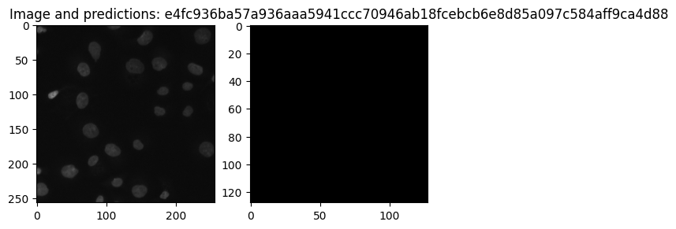
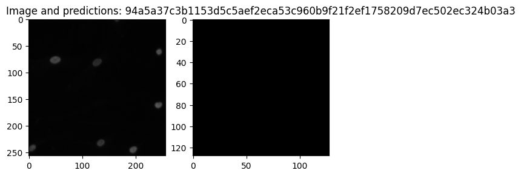
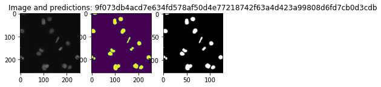
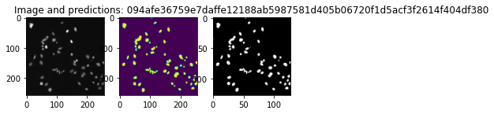
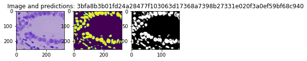
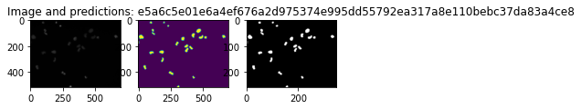
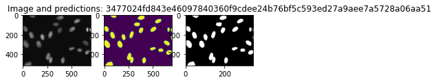
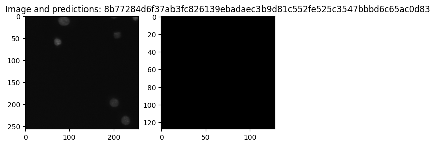

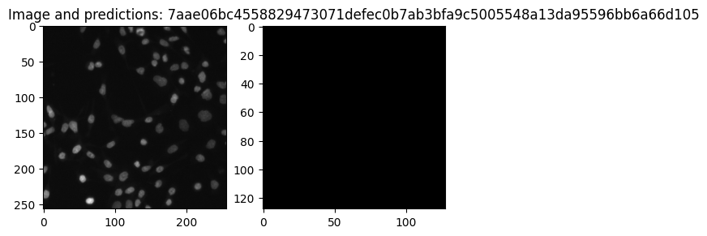
ps.produce_and_save_predicted_masks_for_model(model_name="res_u_net", custom_data_path=None)
1/1 [==============================] - 0s 35ms/step
1/1 [==============================] - 0s 32ms/step
1/1 [==============================] - 0s 26ms/step
1/1 [==============================] - 0s 23ms/step
1/1 [==============================] - 0s 18ms/step
sample_and_plot_predictions(data_path, model_name="u_net_plus_plus", n=10)
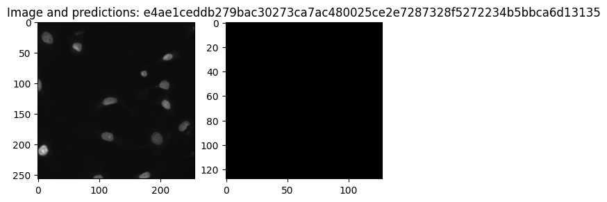
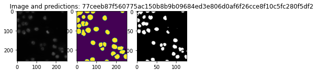
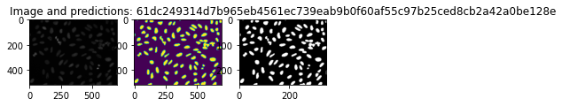
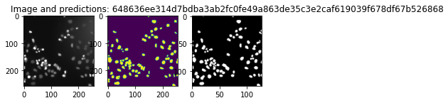
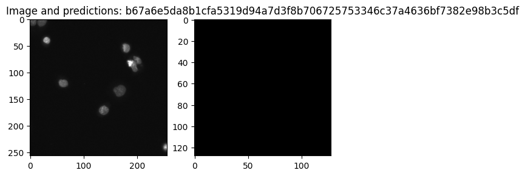
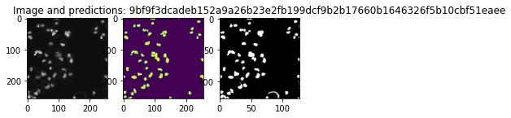
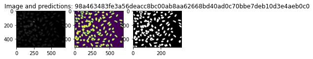
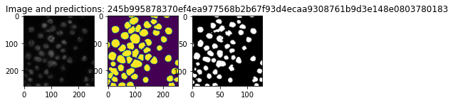
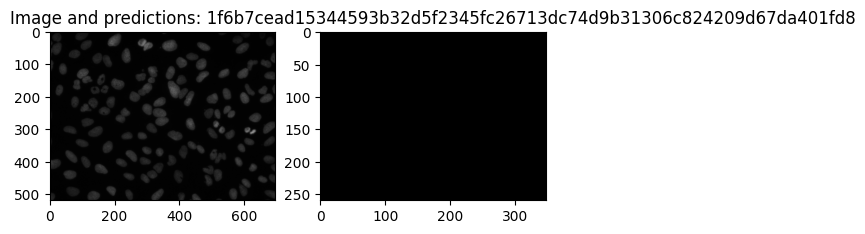
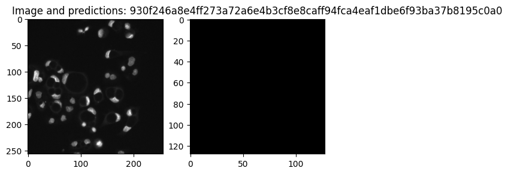